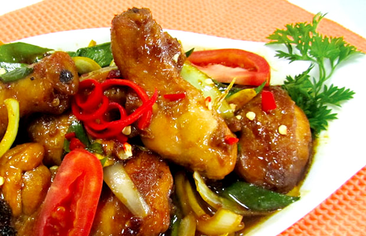

AYAM KECAP

Bahan:
-
1/2 ekor ayam, potong 6 bagian, tambahkan 1/2 sendok teh garam dan 2 sendok makan air jeruk nipis, aduk rata
-
4 siung banwang putih, memarkan
-
1/2 ruas jari jahe, memarkan
-
1/2 butir bawang bombai, potong panjang
-
2tangkai daun bawang, potong serong
-
5 sendok makan kecap bango manis pedas gurih
-
1/2 sendok teh lada putih bubuk
-
1/4 sendok teh garam
-
1 buah tomat, potong panjang
-
100 ml air
-
Minyak goreng secukupnya untuk menggoreng
-
1 sendok makan margarin, untuk menumis
Cara Membuat
-
panaskan minyak, goreng ayam dalam minyak panas hingga matang tapi tidak kering, angkat, sisihkan.
-
panaskan margarin,tumis jaeh dan bawang putih hingga harum, lalu masukkan bawang bombei, tumis hingga layu.
-
Masukkan ayam, aduk sebentar
-
Tambahkan kecap bango manis pedas gurih, garam, lada, tumis hingga matang. masukkan tomat dan daun bawang, aduk sebentar lalu angkat
-
sajikan hangat